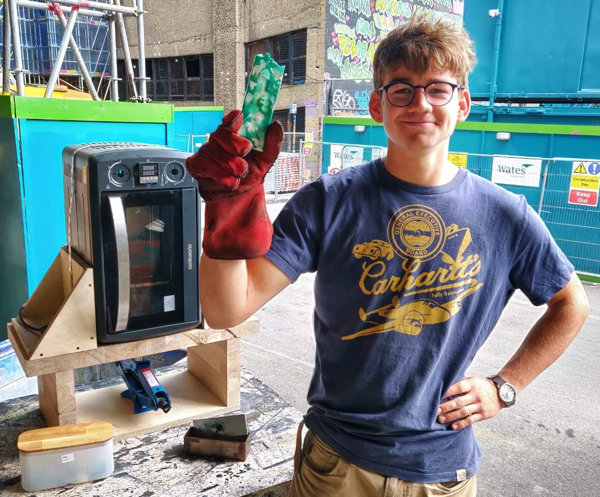
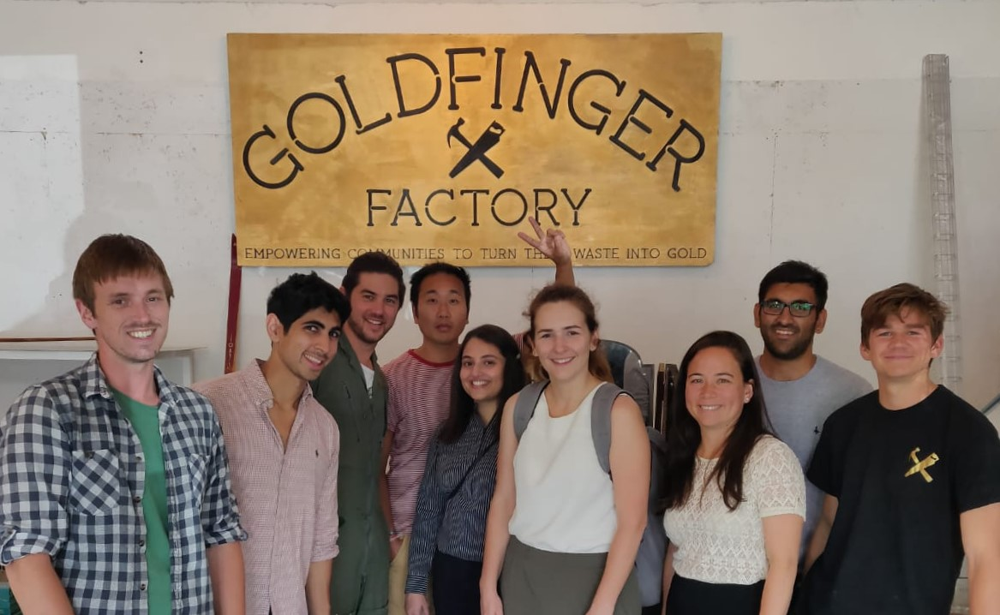

Goldfinger Factory
6 month internship with a sustainable design social enterprise.
2018

Goldfinger Factory is an award-winning sustainable design social
enterprise.
Guided by a passion for circular economy principles
and an inclusive community, Goldfinger Factory combines a bespoke
furniture and interiors business
with a Teaching Academy for less advantaged young people.
The joy of working for a small company was the variety of work I
got to take ownership of. I was involved in key operations which included:
-
• Furniture Design from waste streams
-
• Media Content and Web Development
-
• Educational Workshops
-
• Building the foundation of a Digital Workflow
-
• Plastic Recycling Project
Furniture Design
I worked on bespoke design pieces made from waste materials for clients such as Nando's and TJX.
The table below is an example of my design and fabrication work. The coffee table was made from upcycled flooring tiles from
Imperial College London and the metal frame from display cabinets provided by John Lewis.
The table was sold at the ‘Bon Art’ auction in Monaco where half the proceeds went to
support environmental causes.

The Monaco Table made from repurposed corporate waste.
Marketing Material
I produced various marketing materials for the company including posters,
catalogue pages and graphics for the website.
This allowed me to develop my graphic design skills in Adobe Illustrator, Indesign, and
Photoshop.
Below are some examples of my posters that were displayed in-store and at events.
Plastic Recycling
I designed and built a heat press to make tiles out of waste plastic.
The design is based on the amazing work done by Precious Plastics.

Plastic tile made with the heat press.
These tiles enable the company to explore different materials in-house.
Workshops
While working for Goldfinger Factory, I ran craft workshops with clients at Golfinger HQ
and with members of the public at MakeMore Festival.

Corporate craft day with PwC
 about
about